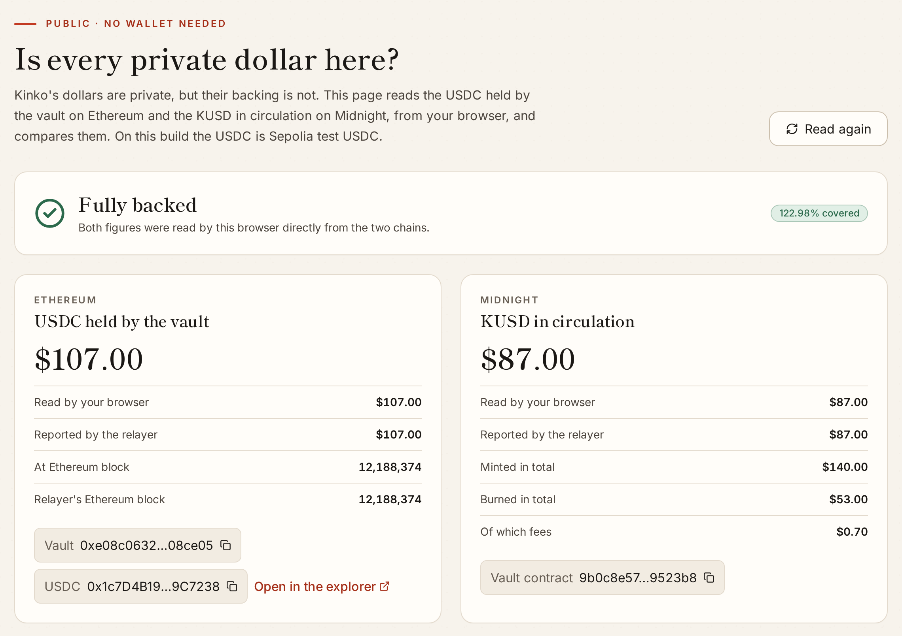
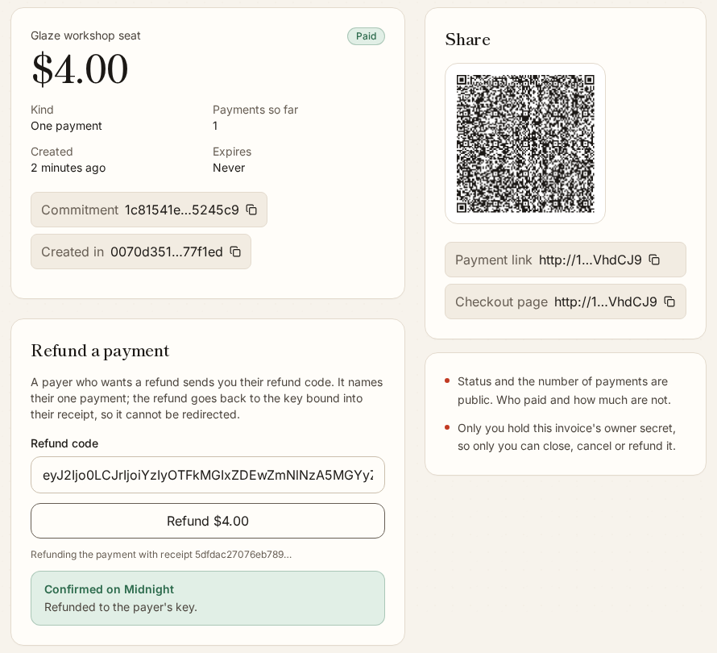

A private dollar account on Midnight,
backed one to one by USDC anyone can count.
Pay, invoice, refund and gift in private. Check the reserve in public, from any browser.
Backing, read live
USDC held by the vault, Ethereum Sepolia
$107.00
KUSD in circulation, Midnight preprod
$87.00
Fully backed: 122.98% covered
Read from both chains on 28 November 2026.
Live at kinko.knole.me
5 Compact contracts on preprod
12 of 12 flows pass live
2,425 tests
Apache-2.0
The problem
On a public chain, paying someone publishes it.
A public stablecoin
Every payment is readable
A salary, a supplier’s price, a customer list: anyone can read them, and they stay on
the chain for good.
A privacy tool
The money is hidden too
The amounts disappear, and so does the reserve. You have to trust that the dollars
behind the token exist.
Unbacked minting has broken stablecoins before. Private money that nobody can count is only
a promise.
Kinko · Midnight Buildathon
Kinko’s answer
Payments private by default. The reserve public by default.
Both rules are enforced by contracts, not by a promise from us.
金庫, kinko: Japanese for “a safe”.
How it works
Four steps across two chains
Ethereum
1
Deposit USDC
Send USDC to an address Sig Network’s signers derive for you. Nobody holds its key.
Midnight
2
Mint KUSD
The signers attest the deposit; the vault contract mints the same amount, shielded. No
attestation, no mint.
Midnight
3
Pay privately
Invoices, @tags, refunds and cards. The chain sees that a valid payment happened, not
who or how much.
Ethereum
4
Withdraw
Burn KUSD and name an address; the signers send the USDC from the vault.
The vault counts every mint and burn in public, so anyone can compare what circulates with
the USDC it holds.
Kinko · Midnight Buildathon
Live today
Open it now at kinko.knole.me

No wallet needed
The Backing, Examine and Verify pages, the docs and a seven-stop guided tour.
No wallet, still paying
A gift or PIN card pays an invoice with no wallet at all. Kinko’s sponsor pays the
network fee.
Everything else
A Midnight wallet such as 1AM, on Midnight preprod and Ethereum Sepolia.
The Backing page on preprod, read live from both chains
The product
One account, the whole payment life cycle

Invoices
One payment, many payers, or a donation
Receipts and refunds
A refund can only return to the payer’s key
Pay by @tag
A name that resolves to private receiving keys
Batch pay
A payroll file, checked line by line, paid at once
Gift and PIN cards
Open and pay with no wallet
Priced in NIGHT
Paid in KUSD at a signed oracle rate
Examiner disclosure
Two of three keyholders open one case
Merchant tools
SDK, CLI, MCP server and hosted checkout
A merchant refunds a payment on preprod with the customer’s refund code
Midnight integration
What the chain sees, and what it never sees
On the public ledger
Never on the ledger
An invoice commitment: an opaque hash
The amount, the merchant, the payout key, the payer
One nullifier per payment, which links to no one
Who paid, and the payer’s secret key
A receipt digest in a Merkle tree
What the receipt is worth
A tag saying a receipt was refunded
Where the refund went
Shielded KUSD coins
Witnesses kept on the device
Oracle signature checked inside the proof
Night Mode with Sig Network
A test searches everything an observer can see for each private value. It must find none,
and it does.
Kinko · Midnight Buildathon
Engineering
Five Compact contracts, live on preprod
Contract
Circuits
What it does
Address
Vault
Sig’s, plus counters
Mints and burns KUSD against attested USDC; counts both in public
9b0c8e57…9523b8
kinko_pay
14
Invoices, settlement in KUSD or NIGHT, receipts, refunds, revenue proofs
4b1d82f3…54459c
kinko_tags
4
@names that resolve to receiving keys
8cc4d907…c99e1
kinko_gift
4
A registry that proves a card is genuine and not voided
d7c38b41…8dee7d
kinko_disclosure
5
Sealed records, opened only when two of three keyholders approve
37fb8cfd…23e4f8
A mint without the signers’ attestation is refused by the vault contract itself.
Full addresses and deploy transactions: README, “Live contracts on Midnight preprod”
Tests and evidence
Checked on both chains, not just on screen
2,425
unit, simulator and integration tests, all passing
12 of 12
end-to-end flows pass live on preprod, each checked on both chains
114
browser tests, on desktop and phone, light and dark
100%
of the payment contracts’ asserts are tripped by a test
Three rounds of independent AI review. Every defect found is fixed and has a test that
fails when the fix is removed. Not a human audit.
Run the flows yourself: yarn workspace @kinko/web e2e:live
What exists today
Private stablecoins are not new
Option
What it is
What Kinko adds
USDCx on Aleo
Private USDC on Aleo, issued and operated by Circle
On Midnight, with invoices, refunds, cards and disclosure
Railgun
A shielded pool on Ethereum
A backed dollar with a reserve anyone counts, and a payments layer
zk.money (Aztec)
A private payments wallet, relaunched in 2026
A checkable reserve and merchant tools
A custodial balance
Private only if the custodian says so; provable only by its report
Private payments and a public reserve
Kinko does not claim to be first. It claims a reserve anyone can count, the whole payment
life cycle, and cards that pay with no wallet.
Sources for each row: README, “Alternatives, and what Kinko adds”
Business
Who uses it, and who pays
A business
Pays staff and contractors from one file without publishing its payroll.
A freelancer or shop
Shares an @tag or a link, so one client’s payment never reveals another’s.
An examiner
An accountant or regulator sees only the records a case names, after approval.
Revenue stream
Status
A flat withdrawal fee
Live in the vault: $0.70 collected on preprod
Paid merchant tools: checkout, webhooks, SDK
Hypothesis: tools built, no price tested
Private payroll runs
Hypothesis: batch pay built, no price tested
Disclosure for audits
Hypothesis: no buyer asked yet
No revenue, pilot or paying user yet. The next step is one merchant pilot.
Kinko · Midnight Buildathon
Limits and next steps
What it does not do yet
Limits, stated plainly
Test networks only, and not audited by a human.
Sig Network’s signers hold the vault key; a colluding threshold could move the USDC,
and the Backing page would show it.
Deposits and withdrawals are public on Ethereum.
Hosted from one machine; Ethereum-wallet sign-in waits for NightKit to serve preprod.
Next
A human audit of the pay and vault contracts.
One merchant pilot.
Mainnet when Night Mode opens there.
Fees sponsored for every action a new account takes.
Earning on idle balances, privately, through the vault’s Aave support.
Full list: README, “Limits, stated plainly”, and docs/THREAT-MODEL.md
Kinko 金庫
Private dollars, counted in public.
Try it
kinko.knole.me
Read the code
github.com/Pratiikpy/kinko
We are looking for
A first merchant pilot, and an auditor
Built on Midnight. Night Mode with Sig Network. Wallet connection by NightKit, from 1AM.
Payments model after NullPay, used with its author’s permission. Apache-2.0.